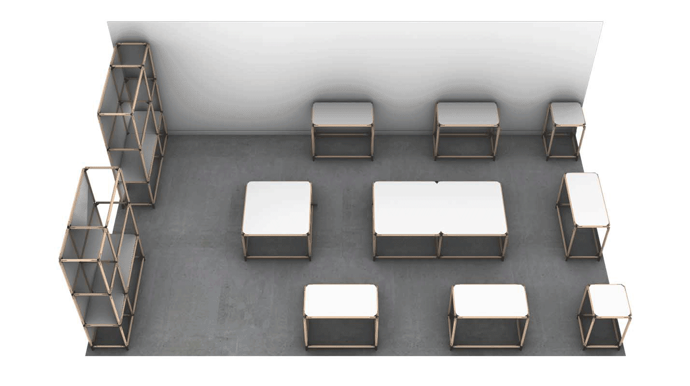
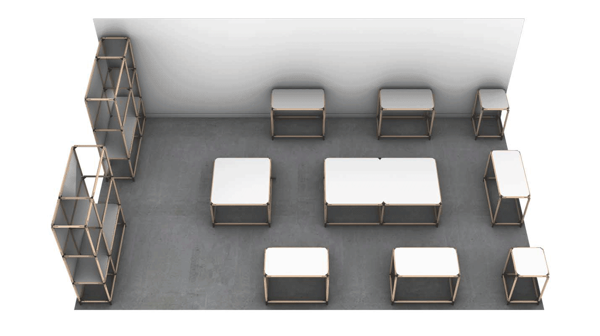
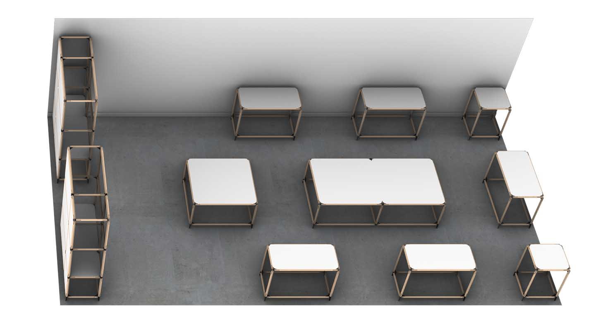
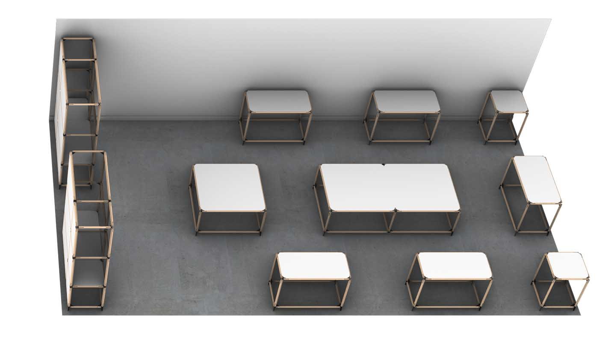
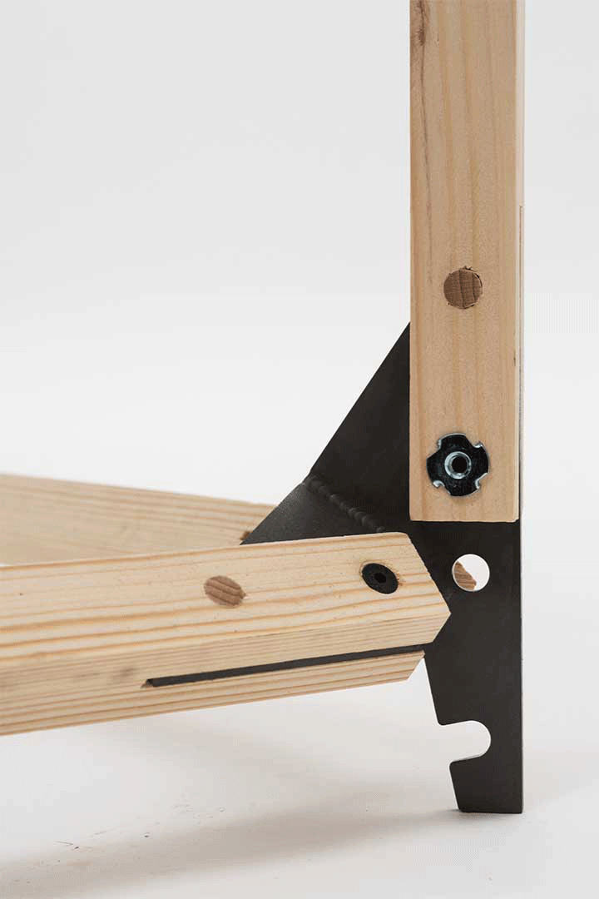

Pol
2019
- Projet d'études
Peut-on imaginer des scénographies temporaires qui ne soient pas génératrices de grandes quantités de déchets ?
Issu d’un partenariat avec la galerie d’art Bertrand Grimont, ce projet est une tentative de contrepied à la tendance actuelle des scénographies jetables.

Pol est un ensemble de structures réutilisables, pouvant être modulé pour créer un grand nombre de dispositions possibles.
 

 

Une plaque d’acier de 4mm d’épaisseur est découpée, pliée puis soudée pour former l’attache. Celle-ci, par une simple logique d’encastrement et de vissage, vient servir de pièce de liaison aux tasseaux de bois.


